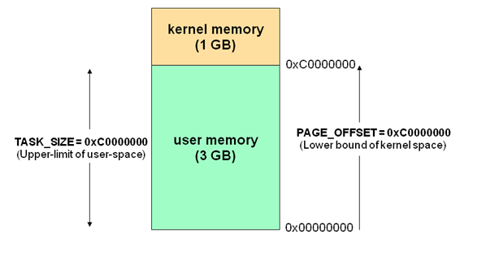

执行中的程序，可执行的，从磁盘加载到主存，获得CPU一个静态的程序（头文件、代码段、数据段组成）通过操作系统，在内存中让CPU执行起来形成一个动态的执行过程，这个执行过程我们称之为进程
进程与程序的区别
- 进程是动态的，程序是静态的：程序是有序代码的集合；进程是程序的执行，进程有内核态和用户态。
- 进程是暂时的，程序是永久的：进程是一个状态变化的过程，程序可长久保存
- 进程与程序的组成不同：进程的组成包括程序、数据和进程控制块（即进程状态信息）
进程与程序的关系类比：
有一个计算机科学家，想亲手给女儿做一个生日蛋糕。所以他就找了一本有关做蛋糕的食谱。买了一些原料，面粉、鸡蛋、糖、香料等，然后边看边学边做。
食谱=程序 科学家=CPU
原料=数据 做蛋糕=进程
这时小儿子哭着跑进来，说手被蜜蜂蛰了。教授只好把蛋糕先放在一边。他在食谱上做了个标记，把状态信息记录了起来。然后又去找了一本医疗手册（因为他也不是医生，根据医疗手册处理伤口），查到了相关的内容，按照上面的指令一步步地执行，当伤口处理之后，又回到厨房继续做蛋糕。
道理：CPU从一个进程（做蛋糕）切换到另一个进程（医疗救护）。切换就取决于到底哪个进程更值得去先做，在这里面医务治疗的优先级比做蛋糕要高，所以科学家会从做蛋糕切换至医疗救护过程。体现出进程的动态性（CPU在执行过程中会动态切换不同的进程，来完成不同的功能，这也是静态程序没有的特征）。
进程的特点
- 动态性
- 并发性
- 独立性
- 制约性
动态性
可动态地创建、结束进程；在执行过程中会产生切换，可能从一个状态变到另一个状态，执行完毕会有结束进程，有一个动态的执行过程。
进程切换资料：
http://guojing.me/linux-kernel-architecture/posts/process-switch/
并发性
进程可以被独立的调度并占用处理机（CPU）运行；
并发并行的概念：
并发：在一段时间内有多进程在执行，并发是逻辑概念，我只有8个赛道但我有20个人再跑。
并行：在一个时刻有多进程在执行，并行指的是物理上的，如果我有8个CPU，我并行即就是在每一时刻只有8个CPU在运行。
补充：一个时刻一个CPU不能实现并行，因为某个时刻只能执行一个进程，要执行其他进程必须进行切换，只有说当有多个CPU时（多核），一个时刻有多个进程在执行（并行）
独立性
不同进程的工作不相互影响；一个进程在执行中不会突然被另一个进程所破坏。页表是保持进程独立性的重要机制，操作系统会给不同的进程分配不同的页表，让每个进程在一块独立的空间中运行，使他们的代码，数据都不受影响，保证进程的正确性。
制约性
因访问共享数据/资源或进程间同步而产生制约。

（a）动态性 （b）并发性 （c）制约性
进程控制块（process control block, PCB）
在Linux操作系统中，每个进程被创建的时候，内核会给这个进程分配一个进程描述符结构。进程描述符在一般的操作系统概念中也被称为PCB，也就是进程控制块。这个进程描述符保存了这个进程的状态，标示符，打开的文件，等待的信号，文件系统等待的资源信息。每个进程描述符都表示了独立的一个进程，而在系统中，每个进程的进程描述都加入到了一个双向循环的任务队列中，由操作系统进行进程的调度，决定哪个进程可以占用CPU，哪个进程应该让出CPU。Linux中的进程描述符是一个task_struct类型的结构体。在Linux中，一个进程的进程描述符结构如下图所示：
task_struct是一个相当大的数据结构，同时里面也指向了其他类型的数据结构。比如thread_info，指向的是这个进程的线程信息；mm_struct指向了这个进程的内存结构；file_struct指向了这个进程打开的进程描述符结构等等。
操作系统为每个进程维护了一个PCB，用来保存与该进程有关的各种状态信息，PCB是进程存在的唯一标志
- 进程的创建：为该进程生成一个PCB；
- 进程的终止：回收它的PCB；
- 进程的组织管理：通过对PCB的组织管理来实现；
PCB含有一下三大类信息：
一.进程表示信息。如本进程的标识，本进程的父进程标识，用户标识（这个进程属于哪个用户）。
二.处理机（CPU）状态信息保存区。保存进程的运行现场（状态）信息：
1.用户可见寄存器，用户程序可以使用的数据，地址等寄存器。
2.控制和状态寄存器，如程序计数器（PC），程序状态字（PSW）。
3.栈指针，过程调用/系统调用/中断处理和返回时需要用到它。
三：进程控制信息：
调度和状态（status）信息，用于操作系统调用进程并占用CPU使用。
进程间通信信息，为支持进程间的与通信相关的各种标识、信号、信件等，这些信息存在接收方的PCB中。
存储管理信息，包含有指向本进程映像存储空间的数据结构。
进程所有资源，说明由进程打开、使用的系统资源，如打开的文件等。
有关数据结构连接信息，进程可以连接到一个进程队列中，或连接相关的其他进程的PCB。
进程状态
查看进程的状态：ps -ef-l|less（其中S这一列代表状态）
进程状态说明：
R（task_running）：可执行状态
只有在该状态的进程才可能在CPU上运行。而同一时刻可能有多个进程处于可执行状态，这些进程的task_struct结构（PCB）被放入对应CPU的可执行队列中（一个进程最多只能出现在一个CPU的可执行队列中）。进程调度器的任务就是从各个CPU的可执行队列中分别选择一个进程在该CPU上运行。很多操作系统教科书将正在CPU上执行的进程定义为RUNNING状态、而将可执行但是尚未被调度执行的进程定义为READY状态，这两种状态在linux下统一为TASK_RUNNING状态。
S（task_interruptible，sleep）：可中断的睡眠状态
处于这个状态的进程因为等待某某事件的发生（比如等待socket连接、等待信号量），而被挂起。这些进程的task_struct结构被放入对应事件的等待队列中。当这些事件发生时（由外部中断触发、或由其他进程触发），对应的等待队列中的一个或多个进程将被唤醒。通过ps命令我们会看到，一般情况下，进程列表中的绝大多数进程都处于task_interruptible状态（除非机器的负载很高）。毕竟CPU就这么一两个，进程动辄几十上百个，如果不是绝大多数进程都在睡眠，CPU又怎么响应得过来。
D（task_uninterruptible）：不可中断的睡眠状态
与task_interruptible状态类似，进程处于睡眠状态，但是此刻进程是不可中断的。不可中断指的并不是CPU不响应外部硬件的中断，而是指进程不响应异步信号。绝大多数情况下，进程处在睡眠状态时，总是应该能够响应异步信号的。但是uninterruptiblesleep状态的进程不接受外来的任何信号，因此无法用kill杀掉这些处于D状态的进程，无论是”kill”, “kill-9″还是”kill -15″，这种情况下，一个可选的方法就是reboot。处于uninterruptiblesleep状态的进程通常是在等待IO，比如磁盘IO，网络IO，其他外设IO，如果进程正在等待的IO在较长的时间内都没有响应，那么就被ps看到了，同时也就意味着很有可能有IO出了问题，可能是外设本身出了故障，也可能是比如挂载的远程文件系统已经不可访问了。而task_uninterruptible状态存在的意义就在于，内核的某些处理流程是不能被打断的。如果响应异步信号，程序的执行流程中就会被插入一段用于处理异步信号的流程（这个插入的流程可能只存在于内核态，也可能延伸到用户态），于是原有的流程就被中断了。在进程对某些硬件进行操作时（比如进程调用read系统调用对某个设备文件进行读操作，而read系统调用最终执行到对应设备驱动的代码，并与对应的物理设备进行交互），可能需要使用task_uninterruptible状态对进程进行保护，以避免进程与设备交互的过程被打断，造成设备陷入不可控的状态。这种情况下的task_uninterruptible状态总是非常短暂的，通过ps命令基本上不可能捕捉到。
T（task_stoppedor task_traced）：暂停状态或跟踪状态
向进程发送一个sigstop信号，它就会因响应该信号而进入task_stopped状态（除非该进程本身处于task_uninterruptible状态而不响应信号）。（sigstop与sigkill信号一样，是非常强制的。不允许用户进程通过signal系列的系统调用重新设置对应的信号处理函数。）向进程发送一个sigcont信号，可以让其从task_stopped状态恢复到task_running状态。当进程正在被跟踪时，它处于task_traced这个特殊的状态。“正在被跟踪”指的是进程暂停下来，等待跟踪它的进程对它进行操作。比如在gdb中对被跟踪的进程下一个断点，进程在断点处停下来的时候就处于task_traced状态。而在其他时候，被跟踪的进程还是处于前面提到的那些状态。对于进程本身来说，task_stopped和task_traced状态很类似，都是表示进程暂停下来。而task_traced状态相当于在task_stopped之上多了一层保护，处于task_traced状态的进程不能响应sigcont信号而被唤醒。只能等到调试进程通过ptrace系统调用执行ptrace_cont、ptrace_detach等操作（通过ptrace系统调用的参数指定操作），或调试进程退出，被调试的进程才能恢复task_running状态。
Z（task_dead -exit_zombie）：退出状态，进程成为僵尸进程（zombie）
在Linux进程的状态中，僵尸进程是非常特殊的一种，它是已经结束了的进程，但是没有从进程表中删除。太多了会导致进程表里面条目满了，进而导致系统崩溃，倒是不占用其他系统资源。它已经放弃了几乎所有内存空间，没有任何可执行代码，也不能被调度，仅仅在进程列表中保留一个位置，记载该进程的退出状态等信息供其他进程收集，除此之外，僵尸进程不再占有任何内存空间。进程在退出的过程中，处于TASK_DEAD状态。在这个退出过程中，进程占有的所有资源将被回收，除了task_struct结构（以及少数资源）以外。于是进程就只剩下task_struct这么个空壳，故称为僵尸。之所以保留task_struct，是因为task_struct里面保存了进程的退出码、以及一些统计信息。而其父进程很可能会关心这些信息。比如在shell中，$?变量就保存了最后一个退出的前台进程的退出码，而这个退出码往往被作为if语句的判断条件。当然，内核也可以将这些信息保存在别的地方，而将task_struct结构释放掉，以节省一些空间。但是使用task_struct结构更为方便，因为在内核中已经建立了从pid到task_struct查找关系，还有进程间的父子关系。释放掉task_struct，则需要建立一些新的数据结构，以便让父进程找到它的子进程的退出信息。子进程在退出的过程中，内核会给其父进程发送一个信号，通知父进程来“收尸”。父进程可以通过wait系列的系统调用（如wait4、waitid）来等待某个或某些子进程的退出，并获取它的退出信息。然后wait系列的系统调用会顺便将子进程的尸体（task_struct）也释放掉。这个信号默认是SIGCHLD，但是在通过clone系统调用创建子进程时，可以设置这个信号。如果他的父进程没安装SIGCHLD信号处理函数调用wait或waitpid()等待子进程结束，又没有显式忽略该信号，那么它就一直保持僵尸状态，子进程的尸体（task_struct）也就无法释放掉。如果这时父进程结束了，那么init进程自动会接手这个子进程，为它收尸，它还是能被清除的。但是如果如果父进程是一个循环，不会结束，那么子进程就会一直保持僵尸状态，这就是为什么系统中有时会有很多的僵尸进程。当进程退出的时候，会将它的所有子进程都托管给别的进程（使之成为别的进程的子进程）。托管的进程可能是退出进程所在进程组的下一个进程（如果存在的话），或者是1号进程。所以每个进程、每时每刻都有父进程存在。除非它是1号进程。1号进程，pid为1的进程，又称init进程。
linux系统启动后，第一个被创建的用户态进程就是init进程。它有两项使命：
- 执行系统初始化脚本，创建一系列的进程（它们都是init进程的子孙）；
- 在一个死循环中等待其子进程的退出事件，并调用waitid系统调用来完成“收尸”工作；
init进程不会被暂停、也不会被杀死（这是由内核来保证的）。它在等待子进程退出时处于task_interruptible状态，“收尸”时则处于task_running状态。
Unix/Linux处理僵尸进程的方法：
找出父进程号，然后kill父进程，之后子进程（僵尸进程）会被托管到其他进程，如init进程，然后由init进程将子进程的尸体（task_struct）释放掉。
问题：如果子进程是僵尸进程，父进程这时候结束了，那么一定是init进程去接管该进程吗？然后进行收尸？那么如果子进程不是僵尸进程而是正常的进程的话，其父进程结束后，该进程会有一个新的父进程，这个新的父进程不一定是init进程是吗？
X（task_dead -exit_dead）：退出状态，进程即将被销毁
exit_dead状态是非常短暂的，几乎不可能通过ps命令捕捉到。
==================================================================
进程的初始状态：
进程是通过fork系列的系统调用（fork、clone、vfork）来创建的，内核（或内核模块）也可以通过kernel_thread函数创建内核进程。这些创建子进程的函数本质上都完成了相同的功能——将调用进程复制一份，得到子进程。
进程状态变迁
进程自创建以后，状态可能发生一系列的变化，直到进程退出。而尽管进程状态有好几种，但是进程状态的变迁却只有两个方向——从task_running状态变为非task_running状态、或者从非task_running状态变为task_running状态。也就是说，如果给一个task_interruptible状态的进程发送sigkill信号，这个进程将先被唤醒（进入task_running状态），然后再响应sigkill信号而退出（变为task_dead状态）。并不会从task_interruptible状态直接退出。执行唤醒的进程设置被唤醒进程的状态为task_running，然后将其task_struct结构加入到某个cpu的可执行队列中。于是被唤醒的进程将有机会被调度执行。
用户空间与内核空间
我们知道现在操作系统都是采用虚拟存储器，那么对32位操作系统而言，它的寻址空间（虚拟存储空间）为4G（2的32次方）。操心系统的核心是内核，独立于普通的应用程序，可以访问受保护的内存空间，也有访问底层硬件设备的所有权限。为了保证用户进程不能直接操作内核，保证内核的安全，操心系统将虚拟空间划分为两部分，一部分为内核空间，一部分为用户空间。针对linux操作系统而言，将最高的1G字节（从虚拟地址0xC0000000到0xFFFFFFFF），供内核使用，称为内核空间，而将较低的3G字节（从虚拟地址0x00000000到0xBFFFFFFF），供各个进程使用，称为用户空间。每个进程可以通过系统调用进入内核，因此，Linux内核由系统内的所有进程共享。于是，从具体进程的角度来看，每个进程可以拥有4G字节的虚拟空间。空间分配如下图所示：

有了用户空间和内核空间，整个linux内部结构可以分为三部分，从最底层到最上层依次是：硬件–>内核空间–>用户空间。如下图所示：

需要注意的细节问题：
（1） 内核空间中存放的是内核代码和数据，而进程的用户空间中存放的是用户程序的代码和数据。不管是内核空间还是用户空间，它们都处于虚拟空间中。
（2） Linux使用两级保护机制：0级供内核使用，3级供用户程序使用。
内核态与用户态：
（1）当一个任务（进程）执行系统调用而陷入内核代码中执行时，称进程处于内核运行态（内核态）。此时处理器处于特权级最高的（0级）内核代码中执行。当进程处于内核态时，执行的内核代码会使用当前进程的内核栈。每个进程都有自己的内核栈。
（2）当进程在执行用户自己的代码时，则称其处于用户运行态（用户态）。此时处理器在特权级最低的（3级）用户代码中运行。当正在执行用户程序而突然被中断程序中断时，此时用户程序也可以象征性地称为处于进程的内核态。因为中断处理程序将使用当前进程的内核栈。
参考资料：
http://blog.csdn.net/f22jay/article/details/7925531
http://blog.csdn.net/zhangskd/article/details/6956638
http://blog.chinaunix.net/uid-26838492-id-3162146.html
进程上下文与中断上下文
我在看《linux内核设计与实现》这本书的第三章进程管理时候，看到进程上下文。书中说当一个程序执行了系统调用或者触发某个异常（软中断），此时就会陷入内核空间，内核此时代表进程执行，并处于进程上下文中。看后还是没有弄清楚，什么是进程上下文，如何上google上面狂搜一把，总结如下：
程序在执行过程中通常有用户态和内核态两种状态，CPU对处于内核态根据上下文环境进一步细分，因此有了下面三种状态：
（1）内核态，运行于进程上下文，内核代表进程运行于内核空间。
（2）内核态，运行于中断上下文，内核代表硬件运行于内核空间。
（3）用户态，运行于用户空间。
上下文context： 上下文简单说来就是一个环境。
用户空间的应用程序，通过系统调用，进入内核空间。这个时候用户空间的进程要传递 很多变量、参数的值给内核，内核态运行的时候也要保存用户进程的一些寄存 器值、变量等。所谓的“进程上下文”，可以看作是用户进程传递给内核的这些参数以及内核要保存的那一整套的变量和寄存器值和当时的环境等。
相对于进程而言，就是进程执行时的环境。具体来说就是各个变量和数据，包括所有的寄存器变量、进程打开的文件、内存信息等。一个进程的上下文可以分为三个部分:用户级上下文、寄存器上下文以及系统级上下文。
（1）用户级上下文: 正文、数据、用户堆栈以及共享存储区；
（2）寄存器上下文: 通用寄存器、程序寄存器(IP)、处理器状态寄存器(EFLAGS)、栈指针(ESP)；
（3）系统级上下文: 进程控制块task_struct、内存管理信息(mm_struct、vm_area_struct、pgd、pte)、内核栈。
当发生进程调度时，进行进程切换就是上下文切换(context switch).操作系统必须对上面提到的全部信息进行切换，新调度的进程才能运行。而系统调用进行的模式切换(mode switch)。模式切换与进程切换比较起来，容易很多，而且节省时间，因为模式切换最主要的任务只是切换进程寄存器上下文的切换。
硬件通过触发信号，导致内核调用中断处理程序，进入内核空间。这个过程中，硬件的 一些变量和参数也要传递给内核，内核通过这些参数进行中断处理。所谓的“ 中断上下文”，其实也可以看作就是硬件传递过来的这些参数和内核需要保存的一些其他环境（主要是当前被打断执行的进程环境）。中断时，内核不代表任何进程运行，它一般只访问系统空间，而不会访问进程空间，内核在中断上下文中执行时一般不会阻塞。
摘录Linux注释的内容如下：
Process Context
One of the most important parts of a process is the executing program code. This code is read in from an executable file and executed within the program’s address space. Normal program execution occurs in user-space. When a program executes a system call or triggers an exception, it enters kernel-space. At this point, the kernel is said to be “executing on behalf of the process” and is in process context. When in process context, the current macro is valid[7]. Upon exiting the kernel, the process resumes execution in user-space, unless a higher-priority process has become runnable in the interim(过渡期), in which case the scheduler is invoked to select the higher priority process.
Other than process context there is interrupt context, In interrupt context, the system is not running on behalf of a process, but is executing an interrupt handler. There is no process tied to interrupt handlers and consequently no process context.
System calls and exception handlers are well-defined interfaces into the kernel. A process can begin executing in kernel-space only through one of these interfaces – all access to the kernel is through these interfaces.
Interrupt Context
When executing an interrupt handler or bottom half, the kernel is in interrupt context. Recall that process context is the mode of operation the kernel is in while it is executing on behalf of a process – for example, executing a system call or running a kernel thread. In process context, the current macro points to the associated task. Furthermore, because a process is coupled to the kernel in process context(因为进程是以进程上文的形式连接到内核中的), process context can sleep or otherwise invoke the scheduler.
Interrupt context, on the other hand, is not associated with a process. The current macro is not relevant (although it points to the interrupted process). Without a backing process(由于没有进程的背景),interrupt context cannot sleep – how would it ever reschedule?(否则怎么再对它重新调度?) Therefore, you cannot call certain functions from interrupt context. If a function sleeps, you cannot use it from your interrupt handler – this limits the functions that one can call from an interrupt handler.(这是对什么样的函数可以在中断处理程序中使用的限制)
Interrupt context is time critical because the interrupt handler interrupts other code. Code should be quick and simple. Busy looping is discouraged. This is a very important point; always keep in mind that your interrupt handler has interrupted other code (possibly even another interrupt handler on a different line!). Because of this asynchronous nature, it is imperative(必须) that all interrupt handlers be as quick and as simple as possible. As much as possible, work should be pushed out from the interrupt handler and performed in a bottom half, which runs at a more convenient time.
The setup of an interrupt handler’s stacks is a configuration option. Historically, interrupt handlers did not receive(拥有) their own stacks. Instead, they would share the stack of the process that they interrupted[1]. The kernel stack is two pages in size; typically, that is 8KB on 32-bit architectures and 16KB on 64-bit architectures. Because in this setup interrupt handlers share the stack, they must be exceptionally frugal(必须非常节省) with what data they allocate there. Of course, the kernel stack is limited to begin with, so all kernel code should be cautious.
A process is always running. When nothing else is schedulable, the idle task runs.
LINUX完全注释中的一段话：
当一个进程在执行时,CPU的所有寄存器中的值、进程的状态以及堆栈中的内容被称为该进程的上下文。当内核需要切换到另一个进程时，它需要保存当前进程的所有状态，即保存当前进程的上下文，以便在再次执行该进程时，能够必得到切换时的状态执行下去。在LINUX中，当前进程上下文均保存在进程的任务数据结构中。在发生中断时,内核就在被中断进程的上下文中，在内核态下执行中断服务例程。但同时会保留所有需要用到的资源，以便中继服务结束时能恢复被中断进程的执行。